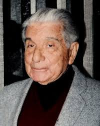
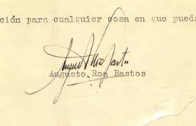

Inicio
Augusto Roa Bastos (1917–2005) fue un escritor, guionista y periodista paraguayo, considerado una de las voces más profundas y comprometidas de la literatura latinoamericana del siglo XX. Su obra está marcada por una constante reflexión sobre el poder, la historia y la identidad del Paraguay, enmarcada dentro de un lenguaje literario innovador y poético.
Durante su vida, Roa Bastos exploró las contradicciones de su país natal, atravesado por dictaduras y desigualdades, y las tradujo en personajes complejos que encarnan la lucha entre la opresión y la esperanza.
Biografía
Nació en Asunción, Paraguay, el 13 de junio de 1917. En su infancia, vivió en el interior del país, donde escuchó las historias orales del pueblo, elemento que influiría profundamente en su escritura. Participó como soldado en la Guerra del Chaco (1932–1935), experiencia que marcó su visión humanista y su rechazo a la violencia.
Tras la guerra, trabajó como periodista y guionista, y comenzó a publicar cuentos y crónicas en diversos medios. En 1947, debido a la guerra civil y a su postura crítica frente al régimen paraguayo, debió exiliarse en Argentina, donde continuó su carrera literaria.
En Buenos Aires, formó parte de un grupo de intelectuales latinoamericanos exiliados y trabajó en el cine y la radio. Más tarde, durante la dictadura argentina, se trasladó a Francia, donde enseñó literatura en la Universidad de Toulouse.
Obras Principales
.jpeg)
La producción literaria de Augusto Roa Bastos es extensa y abarca novelas, cuentos, guiones cinematográficos y ensayos. Su obra más reconocida, Yo el Supremo (1974), es considerada una de las grandes novelas de la literatura hispanoamericana.
- Hijo de Hombre (1960): Primera novela de Roa Bastos, retrata la historia de un pueblo oprimido que lucha por su dignidad. Es un homenaje al sufrimiento y la resistencia del pueblo paraguayo.
- Yo el Supremo (1974): Basada en la figura del dictador José Gaspar Rodríguez de Francia, esta obra mezcla documentos ficticios, monólogos y reflexiones filosóficas para analizar el poder absoluto y la relación entre lengua y dominación.
- El Fiscal (1993): Escrita durante su exilio en Francia, aborda la memoria, el exilio y la culpa, explorando la identidad del escritor frente a la dictadura y la historia nacional.
Estilo y Temas
.jpeg)
El estilo de Roa Bastos combina el lenguaje oral paraguayo con un profundo lirismo literario. Su prosa es densa y simbólica, cargada de metáforas y de un tono reflexivo que invita a la interpretación. La multiplicidad de voces narrativas, el uso de documentos apócrifos y la fragmentación del relato son rasgos distintivos de su escritura.
Entre sus temas más recurrentes destacan el poder autoritario, la memoria colectiva, el lenguaje como instrumento de dominación y liberación, y la búsqueda de una identidad nacional.
Legado
.jpeg)
El impacto de Augusto Roa Bastos trasciende las fronteras del Paraguay. Su obra se inscribe en el llamado “boom latinoamericano”, aunque su voz mantiene una identidad propia, arraigada en la historia paraguaya y en su compromiso con la justicia.
En 1989 recibió el Premio Cervantes, el máximo galardón de las letras hispánicas, en reconocimiento a su trayectoria literaria y a su contribución a la renovación de la narrativa en español.
A su regreso al Paraguay en los años 90, fue recibido como un símbolo nacional. Hasta su muerte en 2005, continuó escribiendo, enseñando y reflexionando sobre el papel de la literatura en la construcción de la memoria colectiva.